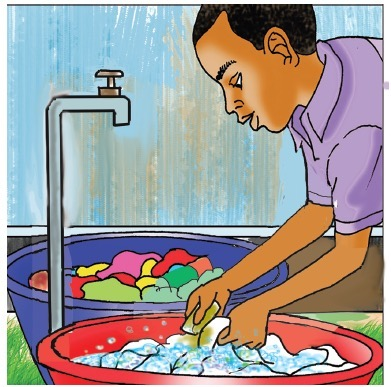
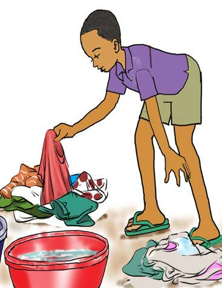

1. Study the following pictures that show the steps forwashing clothes:
Arrange pictures (a)-(f) according to the steps followedwhen washing clothes.


2. Why do we wash white and other coloured clothesseparately?